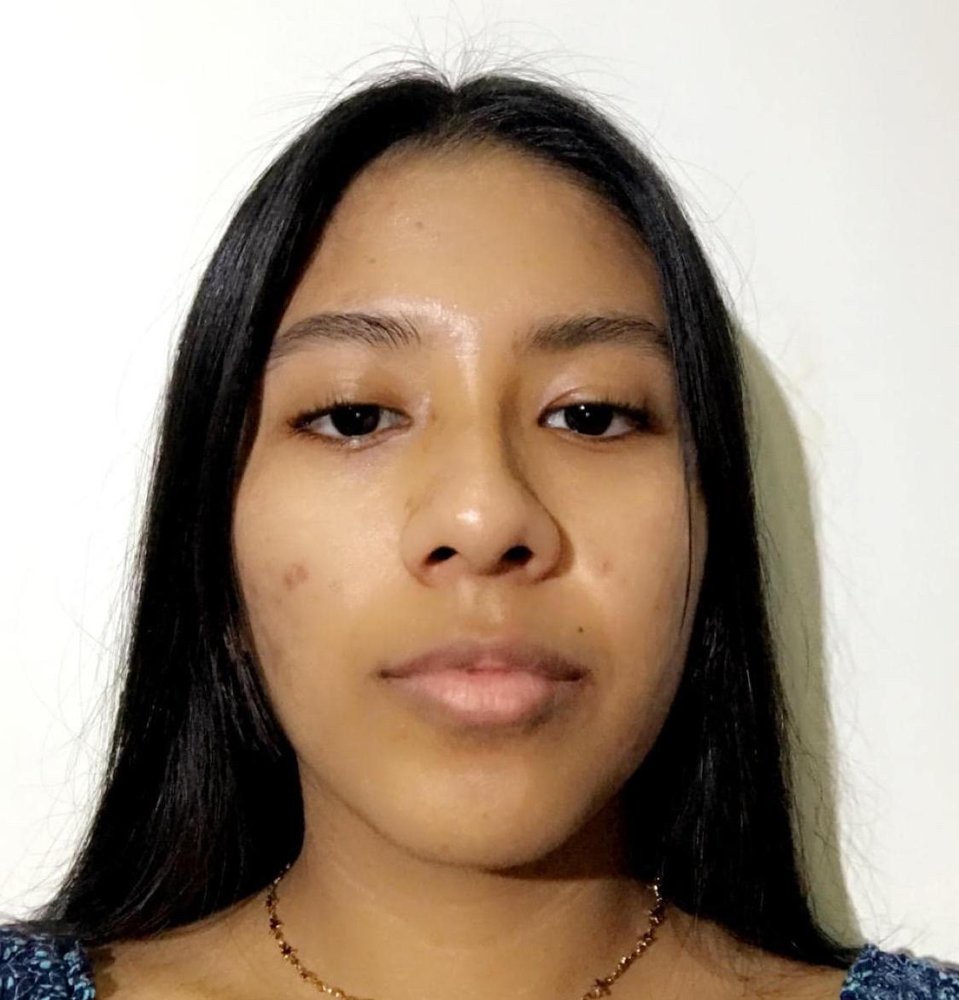

STEPHANY ALMACHE
Ingeniería en Sistemas de Información
- Guayaquil - Ecuador
- 16/11/2001
- Universidad de Guayaquil
Sobre mí
Técnico superior en desarrollo de aplicaciones y plataformas con amplios conocimientos en back-end, desarrollados a través de proyectos propios. Busco desarrollar mi carrera, ayudando a TechSoft Solutions, contribuyendo con mis habilidades en C++, ASP.NET y Azure para lograr diseños finales que satisfagan las necesidades y preferencias de los clientes.
EXPERIENCIA
A la Moda - Fashion Store
2020 - 2022
Brindé atención eficiente a un promedio de 200 clientes semanales. Responsable de manejo de efectivo en cantidades mayores a los $5,000 dólares. Entrené a 2 nuevas dependientas que se unieron al equipo de trabajo. Gestión de stock y trato con proveedores.
ESTUDIOS
Estudios Nivel Secundario
2006 - 2020
Bachiller Técnico - De Servicios Administración de Sistemas Unidad Eductiva San Francisco de Asís.
Estudios Nivel Superior
2020 - Actualidad
Ingeniería en Sistemas de Información Universidad de Guayaquil.
HABILIDADES
- HTML
- CSS
- Javascript
- MySql
- C++
- ASP.NET
PRÁCTICAS
Prácticas en el área de administración
2019
www.cevalogistics.com
CEVA Logistics
- Gestioné la operativa diaria del área de Ground Transport en donde resolví incidencias directamente con los clientes, lo que me ayudó a adquirir habilidades en el área de atención al cliente.
- Recabé los datos necesarios para la realización de informes, aprendiendo cómo se presentan los resultados obtenidos por medio de KPIS.
- Participé en las juntas de planificación de rutas de tráfico terrestre, conociendo los factores involucrados para la optimización de tiempo y recursos.
Prácticas en el área de Logística y Transportes
2020
www.cgcompass.com
Compass Group
- Supervisé los procesos de carga de mercancía en plataforma logística, aprendiendo los parámetros y protocolos necesarios para su buen manejo.
- Completé 234 envíos de pedidos durante los 6 meses de prácticas, adquiriendo práctica en la solución de incidentes con paquetería.
- Resolví 54 casos de clientes insatisfechos con sus pedidos, dando seguimiento a los procesos de devolución desarrollando mis habilidades de atención a cliente.